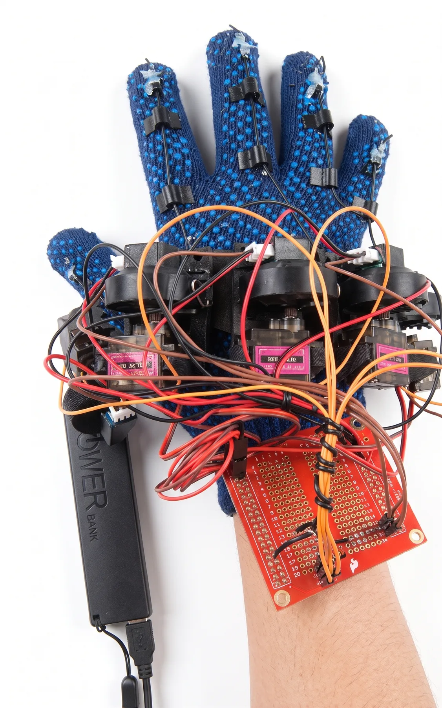
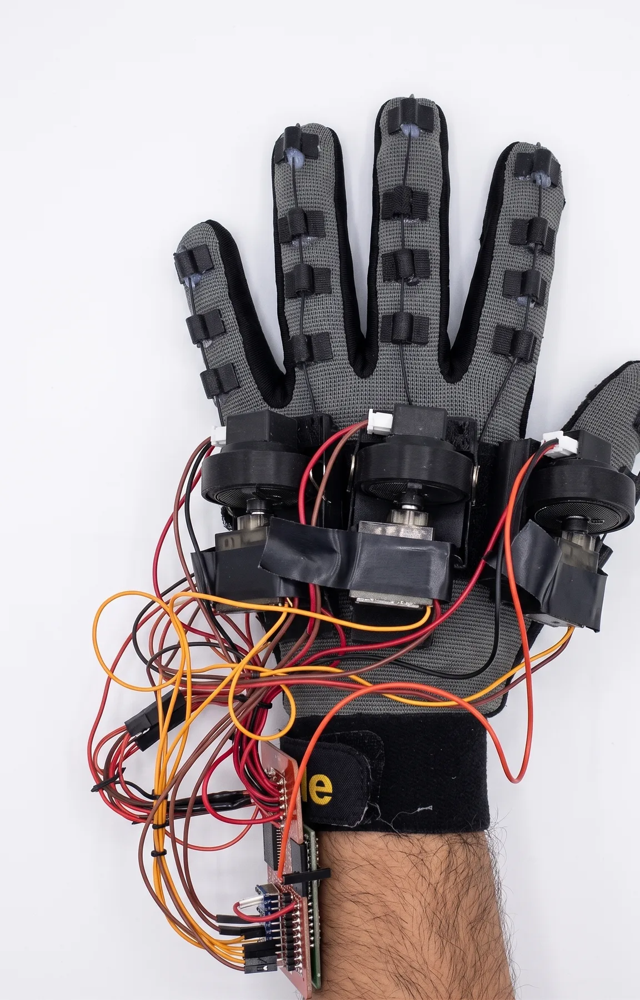
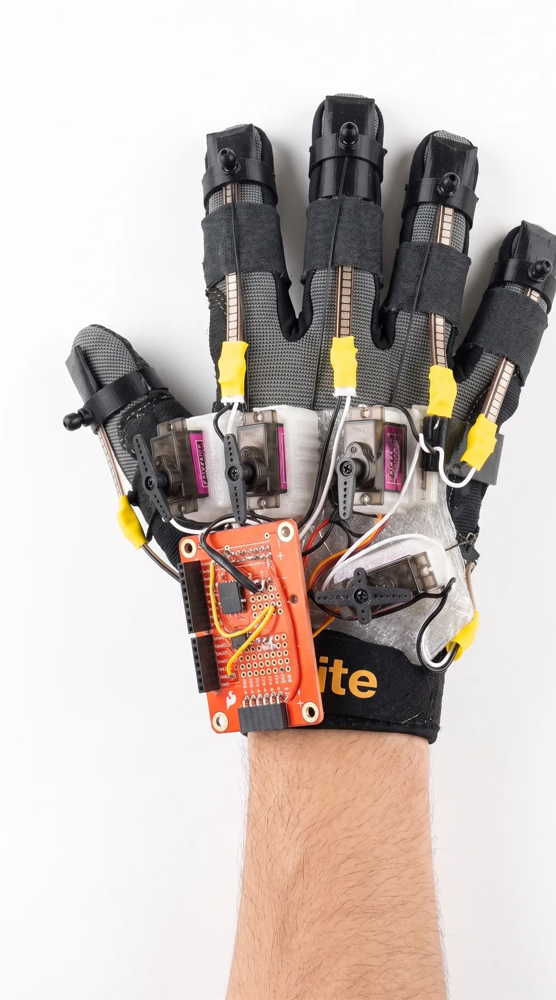
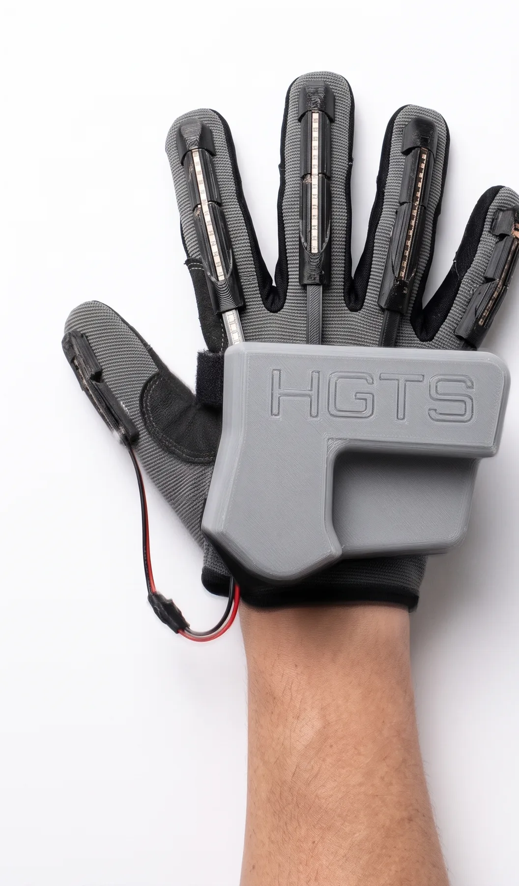

Senior Design Project · 2023
A virtual-reality goalkeeper trainer paired with a DIY haptic-feedback glove — an accessible, adaptable practice environment for players whose training is constrained by geography or scheduling.
The problem. Handball goalkeeper training depends on a coach, a thrower, and a court — and geographical limitations and global event restrictions make consistent practice hard for most players outside elite academies. The need was for an accessible, engaging, and adaptable training solution that didn't require a venue or a partner.
The approach. A Unity VR simulation at the intersection of sports and technology, paired with a custom haptic glove built from flex sensors and an ESP32 microcontroller. The glove delivered both tactile and force feedback; SteamVR handled motion capture and rendering; motion-capture animations and a user-friendly interface filled in the rest. The design went through four iterative prototypes.
95% real-time performance with haptic feedback enabled — meeting both real-time simulation and haptic-feedback standards.
What was hard. The five barriers the project set out to dismantle — realism, integration, user engagement, technology skepticism, and scalability — all converge on one technical problem: a haptic loop fast enough that the cue still feels like contact. Late feedback teaches the wrong timing.
What shipped. A working end-to-end prototype across four iterations. The project placed 2nd at the CENG Capstone Design Competition 2023 — winning Best Prototype and Most Creative Design — and 2nd at the Senior Design Project Competition. The system rendered user movements accurately in VR and held 95% real-time performance with haptics on.
What this changes. Sport-specific VR training can be built cheap, accessible, and customisable when the haptic loop is treated as a primary design constraint, not a finishing touch — reshaping how athletes outside elite academies can train.
Prototypes




flex sensors → ESP32 microcontroller → Unity simulation (SteamVR motion + rendering) → ball trajectory + collision → haptic glove (tactile + force feedback) → measured loop: 95% real-time with haptics on
Senior Design Project, Qatar University CSE, 2023. 2nd Place at the CENG Capstone Design Competition 2023 (Best Prototype, Most Creative Design) and 2nd Place at the Senior Design Project Competition.
Next project →